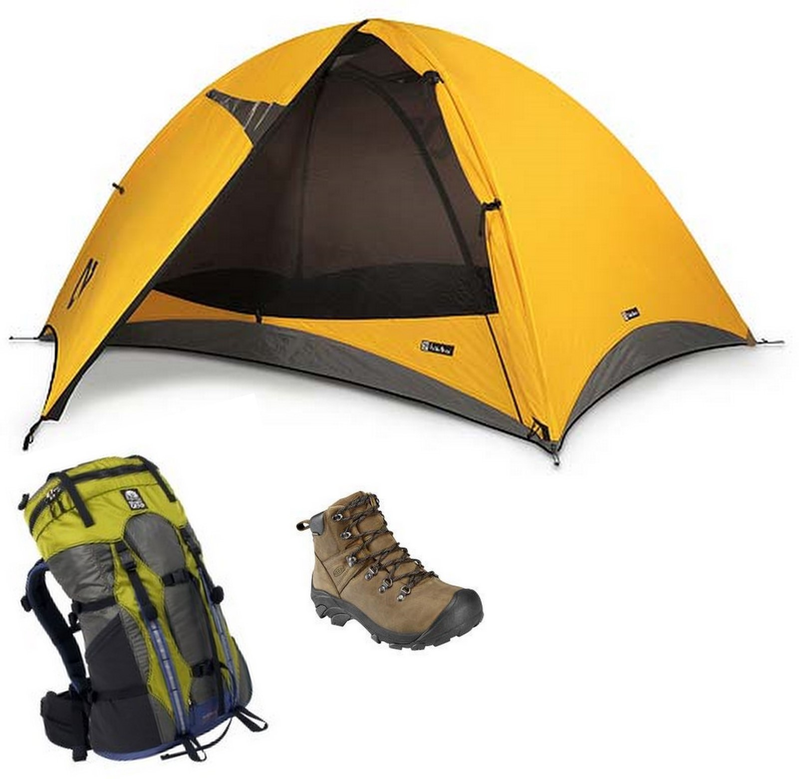

How do you choose your equipment? Here's how.
LIST OF OUTDOOR ADVENTURE EQUIPMENT:

Backpack
Sleeping bag
Sleeping pad
Two-person tent
Four-person tent
Backpacking stove w/ 2 pot cook set
Sit-on top kayak
Life Jacket
Stand Up Paddle Board, Helmet,and Paddle
Helmets
Tandem Kayak and 2 paddle
Rain suits
Jacket
Pants
EQUIPMENT YOU WEAR
Helmet
A helmet is absolutely the number one, most important piece of equipment to own and use. It protects the skull not only from falling rocks or dropped gear, but also from impact against the cliff if a climber should fall and swing. A helmet should fit snugly and comfortably, but should also be adjustable enough to fit a hat underneath. Modern advances in technology have made helmets super lightweight, so "it's too heavy" can no longer be a valid excuse for not wearing one.
Harness
When selecting a harness, comfort is the biggest concern. Padding in both the leg loops and waist belt is worth a few extra bucks when you're hanging on the rope. Don't worry about adjustable leg loops; just make sure you try on the harness with the bulkiest clothes you'll wear climbing. Quick-release buckles holding up the back of the leg loops are a nice feature when nature calls.
Shoes
Many climbs can be done in hiking or approach shoes, but specialized rock shoes make the job easier and more fun. There are a dozen shoe manufacturers and four times as many models to choose from. The number of variables are reduced once a type of shoe is selected. The beginning climber needs an all-around shoe: something that does a little of everything. This shoe will perform moderately well in all conditions, be stiff enough to support a beginner's weaker toes, and be comfortable when worn all day. In the store, the shoe should be tight enough to allow for later stretching, but not overly painful.
EQUIPMENT YOU CARRY
Rope Construction
Modern safety ropes may look like other ropes, but actually have special distinctions. A climber's rope has a kernmantle construction: a soft and supple nylon sheath, usually multi-colored, protects the real "working" part-- the braidedcore. Of the two types of kernmantle ropes-- dynamic and static-- only the former is used in climbing applications. As implied by the name, a dynamic rope stretches, lessening impact on both the climber and her equipment. A climber won't use a static rope because the lack of stretch creates too much force on a safety system, creating dangerous and painful results.
Gear
The most expensive has been left for last. Every climber always needs another piece of gear, so don't expect to buy everything at first. Just the essentials are enough for now.
A belay device catches a fallen climber on the rope and allows rappelling by bending the rope. The most versatile is the tube device. It is lightweight and simple to use. A shopper shouldn't pay over $20 for one.
The carabiner or biner is the staple of a climber's hardware. The biner is the connecting link for each part of the safety system and can be opened or closed as needed. The two main variations are locking and non-locking. Locking biners are for especially critical areas, such as the belay device or your personal tether to the anchor, and have a screw-mechanism that prevents opening of the gate. A starter kit requires four "lockers" (about $9 each) and eight non-locking carabiners (about $5 each). It's a good idea to get at least onepear-shaped biner with a wider opening that makes belaying and rappelling easier. It should cost less then $20.
Slings or runners are strong pieces of nylon that span distances to anchors or protection pieces (solid points connecting the safety system). Runners hold thousands of pounds of force, but nonetheless require redundancy. As a result, several versatile runners should round out a beginner's gear collection. One-inch tubular webbing is easy to find and inexpensive (less than 50 cents per foot). One each of 30-ft, 20-ft, and 10-ft lengths should suffice for most starter situations.